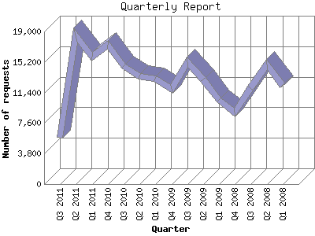

The Quarterly Report shows total activity on your site for each quarter of a
year. Remember that each page hit can result in several server requests as the
images for each page are loaded.
Note: Most likely, the first and
last quarters will not represent a complete quarter's worth of data, resulting
in lower hits.

| Quarter | Number of requests | Number of page requests | |
|---|---|---|---|
| 1. | Q1 2008 | 12,202 | 586 |
| 2. | Q2 2008 | 14,856 | 814 |
| 3. | Q3 2008 | 11,985 | 637 |
| 4. | Q4 2008 | 8,881 | 880 |
| 5. | Q1 2009 | 10,433 | 1,103 |
| 6. | Q2 2009 | 13,057 | 1,529 |
| 7. | Q3 2009 | 15,175 | 2,617 |
| 8. | Q4 2009 | 11,861 | 1,985 |
| 9. | Q1 2010 | 13,122 | 1,546 |
| 10. | Q2 2010 | 13,383 | 1,568 |
| 11. | Q3 2010 | 14,714 | 1,524 |
| 12. | Q4 2010 | 17,325 | 3,224 |
| 13. | Q1 2011 | 15,877 | 2,794 |
| 14. | Q2 2011 | 18,536 | 2,720 |
| 15. | Q3 2011 | 5,744 | 792 |
Most active quarter Q4 2010 : 3,224 pages sent. 18,536 requests handled.
Quarterly average: 1,621 pages sent. 13,143 requests handled.
This report was generated on July 27, 2011 14:38.
Report time frame January 23, 2008 00:27 to July 26, 2011 23:30.
| Web statistics report produced by: analog 6.0 / Report Magic 2.21 |